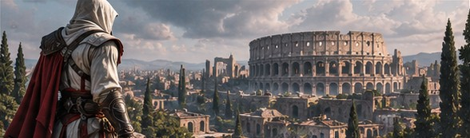

Protagonista
Ezio Auditore
Asume el papel de mentor y trabaja para devolver la libertad a Roma.
Ezio continúa su lucha contra los Borgia en una Roma dominada por su influencia. Esta vez no tendrá que actuar solo: reconstruir la Hermandad y formar nuevos Asesinos será tan importante como enfrentarse a sus enemigos.
Ezio continúa su lucha contra los Borgia en una Roma dominada por su influencia. Esta vez no tendrá que actuar solo: reconstruir la Hermandad y formar nuevos Asesinos será tan importante como enfrentarse a sus enemigos.
Este dossier reúne los personajes, el contexto histórico, los lugares y las actividades que definen esta entrega. La información está organizada para descubrir el juego sin perderse entre sus distintas capas.
Las figuras que dan forma a la historia de Assassin’s Creed Brotherhood.

Asume el papel de mentor y trabaja para devolver la libertad a Roma.
Ambicioso comandante que busca ampliar el poder de su familia.
Miembro influyente de la familia Borgia, ligada a la política y las intrigas.
La hermana de Ezio asume responsabilidades dentro de la organización.
Roma · 1499–1507 · Una recreación histórica que combina acontecimientos reales y ficción.
Tras un ataque a Monteriggioni, Ezio llega a Roma y descubre que los Borgia controlan buena parte de la ciudad. La campaña gira alrededor de debilitar su dominio, recuperar distritos y reconstruir una red de aliados.
Regiones, ciudades y escenarios que dan personalidad a esta aventura.
Una ciudad extensa con monumentos, barrios y zonas bajo control Borgia.
Centro del poder político y religioso, fundamental para la trama.
Áreas exteriores que amplían las actividades y desplazamientos.
Los sistemas principales que definen la forma de jugar esta entrega.
Reclutar ciudadanos, entrenarlos y enviarlos a misiones o llamarlos en combate.
Encadenar eliminaciones para controlar grupos de enemigos.
Herramienta de largo alcance integrada en el arsenal.
Liberar torres Borgia y reabrir tiendas y servicios.
Contratos, desafíos de facciones y actividades de aliados.
Modo competitivo basado en perseguir y reconocer objetivos.
Qué hacemos durante la aventura, cómo exploramos el mundo y qué sistemas conviene dominar.
Reconocer los barrios desde las atalayas, localizar y destruir torres Borgia, reunir información sobre objetivos, cumplir contratos de facciones, reclutar ciudadanos y completar misiones que debilitan el control enemigo.
Detalles y sistemas especiales que merece la pena descubrir durante la exploración.
Las guaridas de Rómulo esconden pruebas y piezas de una armadura especial.
La gestión de reclutas permite enviarlos por Europa y mejorar sus habilidades.
Las reconstrucciones de Roma afectan a la economía y al aspecto de los distritos.
ARCHIVO EN AMPLIACIÓN · Se añadirán ubicaciones concretas y capturas propias a medida que se complete la documentación de cada juego.
Convirtió la Hermandad en una mecánica central y dio protagonismo a la gestión de reclutas y la liberación territorial.